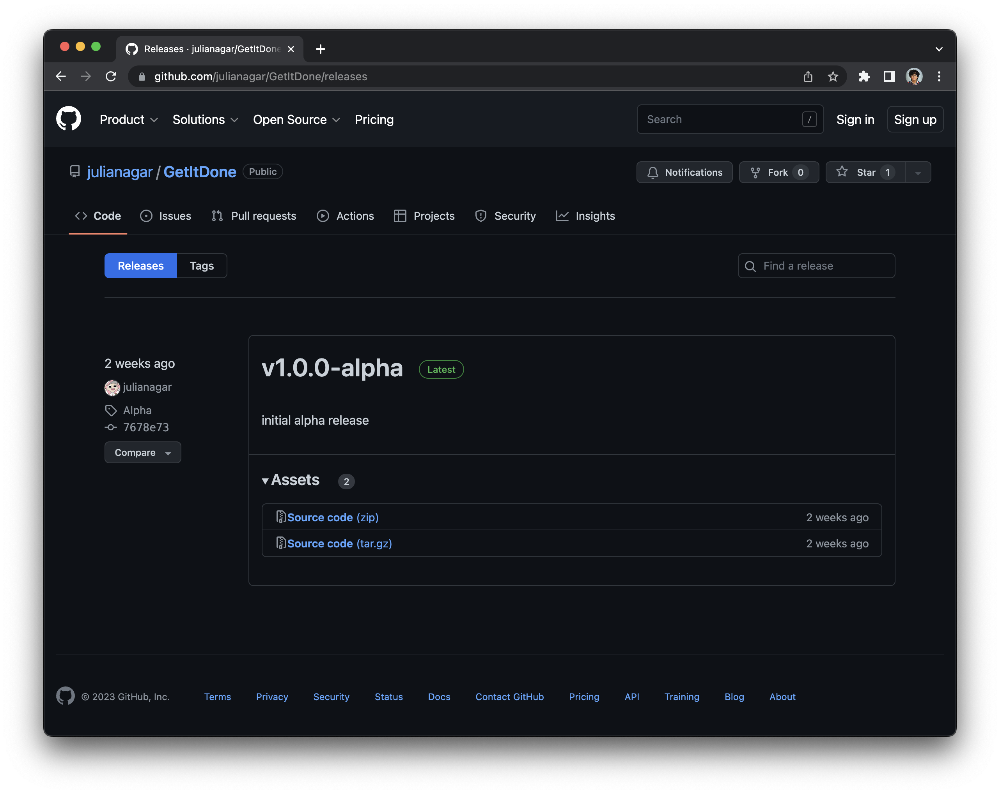
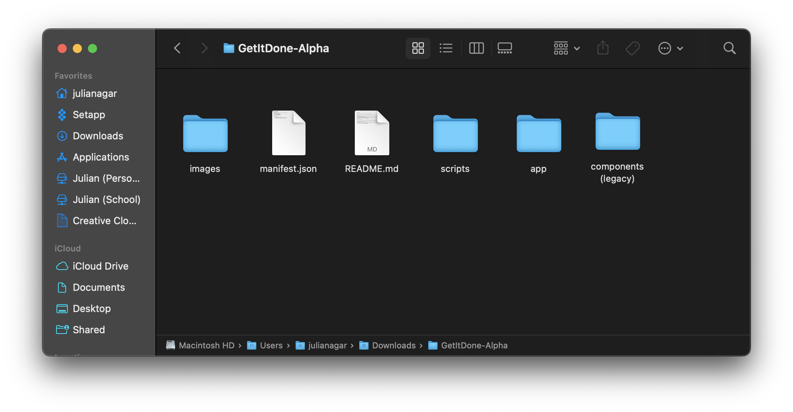
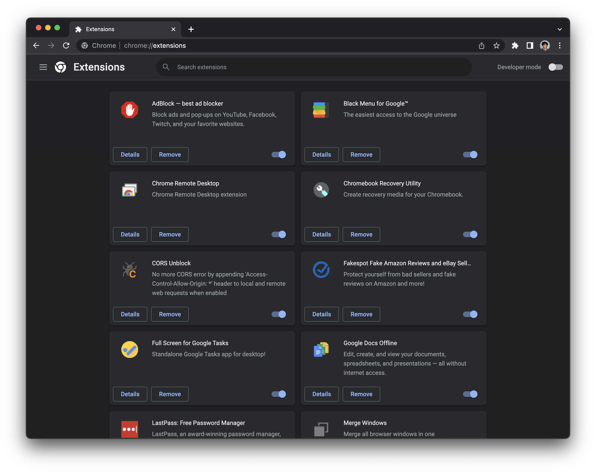
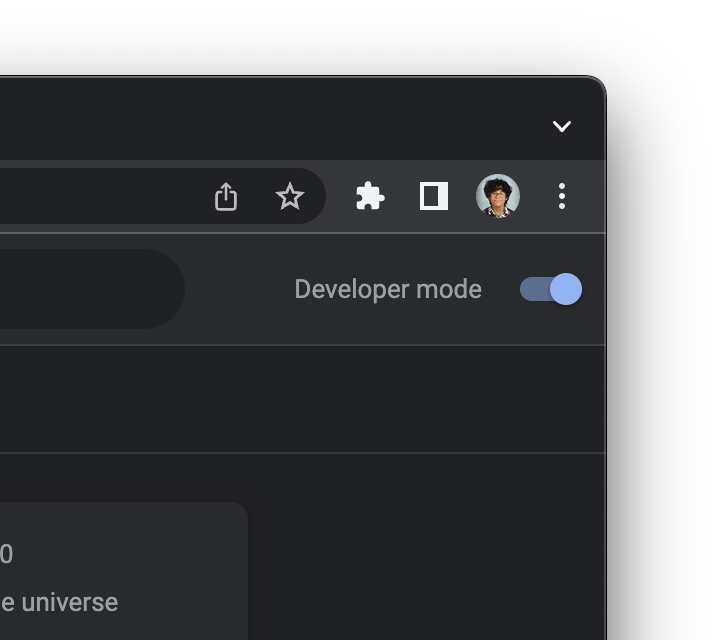
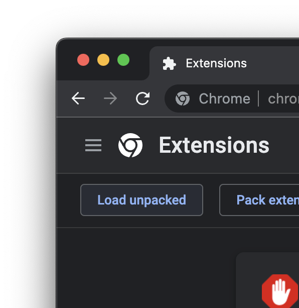
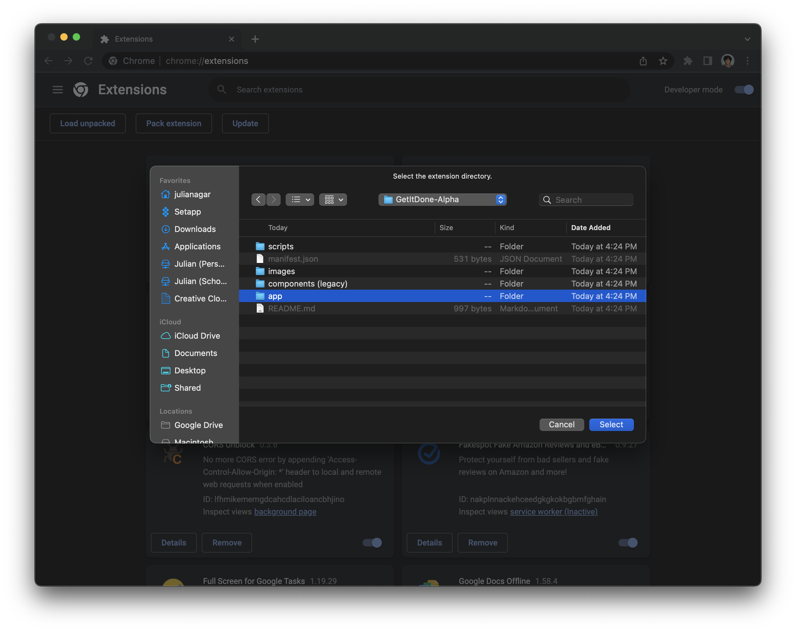

How to download and install GetItDone
GetItDone should work on all Chromium-based desktop browsers but has only been tested with Google Chrome and Arc.
Currently, GetItDone is not available on the Chrome Web Store, and will have to be installed using the Chromium extension developer setting. This page will walk you through how to download the extension from GitHub and install it to your browser.
Are videos more your speed? Check out this tutorial instead.
Step 1) Install the extension from GitHub
Click here to start the download automatically or click here to see all releases. These links are the official downloads for GetItDone.
Want the latest? You can download a version of GetItDone from GitHub commits, but it will probably be more unstable than offical releases 
Step 2) Unzip the file downloaded
Double click on the .zip file downloaded to unzip it.
Step 3) Navigate to chrome://extensions in your browser of choice
The URL may vary depending on your browser. If chrome://extensions does not work, try putting the name of your browser in the place of chrome.
Step 4) Toggle on Developer Mode
Step 5) Select 'Load unpacked'
Step 6) Select the GetItDone folder
Navigate to where you put the GetItDone downloaded folder (should be your Downloads folder) and click on it. Within the GetItDone folder, select the folder named 'App' to be unpacked.
After this step, you should be complete! Enjoy GetItDone!
Got any feedback?